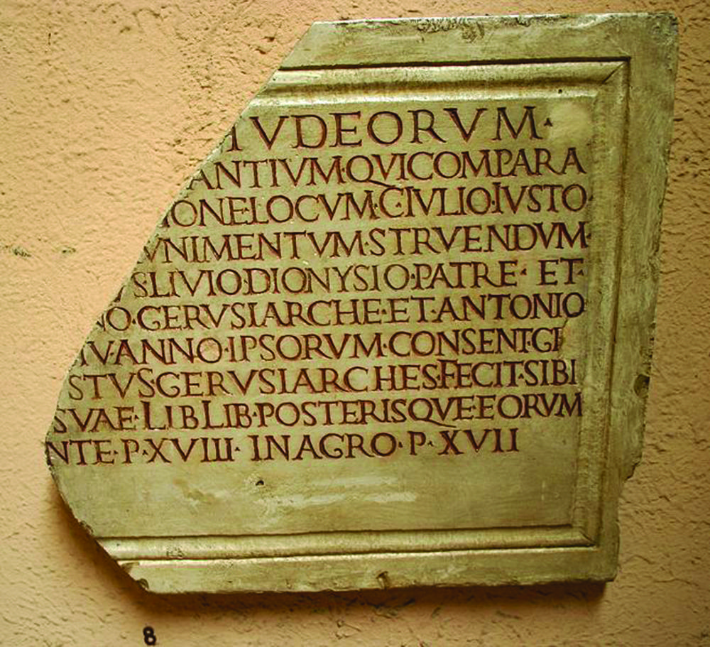
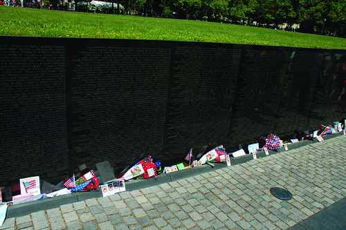
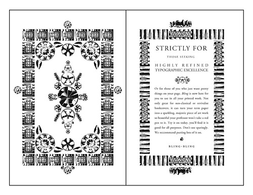

Like the late American comedian Rodney Dangerfield, aesthetic form ‘don’t get no respect’, writes Leslie Atzmon.
Indeed, it is purposely avoided, and design is conspicuously missing, in certain predominant strands of visual scholarship. This absence makes me wonder what’s so visual about visual culture studies. As a linguistically based discipline, visual culture studies ‘verbalises’ visual artefacts by casting them as passive objects of looking and seeing, or as visual representations that circulate in a given culture.1
Speaking at the Design and Semantics of Form and Movement (DESFORM) conference in 2006, Richard Thomas claimed that: ‘In essence, form has no meaning; it is an invitation, a window to possibility. Meaning resides, and is latent within us [the users].’ Thomas does make a good point – users are important participants in design’s meaning-making capacity. But there is more to form than meets the eye. I suggest that the form of design is impurely aesthetic: visual material is not merely an inert prompt for user-generated content but embodies a range of meanings that owe much to the designer’s beliefs and to the historical contexts in which the artefacts were designed. As W. B. Yeats asked (in his poem ‘Among School Children’), ‘How can we know the dancer from the dance?’
My own experience as a design practitioner has made me acutely aware of the meanings that my choices for the material aesthetic form of my design may create for my users, and how these meanings reveal aspects of our contemporary culture. It is clear that there is an unfortunate disconnect between this essential aspect of design practice and the thrust of contemporary visual theory.
Top: Roman monumental lettering, second century, from the presidential estates in Castelporziano, near Rome. The original is in the Museo Nazionale Romano. Picture by Giovanni Dall’Orto, 12 April 2008.
Seeing and thinking
I sometimes wonder if our love affair with linguistically based theory is a self-aggrandising attempt to ensure that visual research is seen as intellectual. I wasn’t sure whether to laugh or cry when I read David Thompson’s Agenda about ‘Art bollocks’ (‘Artspeak: How did “Art bollocks” become the default way of writing about visual culture? Could Mao have the answer?’ Eye no. 62 vol. 16). I was particularly struck by its twin complaints that pure aesthetical concerns are ‘apparently inadequate’ to many artists, tutors and curators, and that ‘theoretical “relevance” is the order of the day’. Is there a way that visual theory can be aesthetically oriented and intellectual at the same time, and can it be better adapted to designers, design scholars and design educators? In a nutshell, then, how might visual theory address design’s material aesthetic form?
In her introduction to Defining Visual Rhetorics (Lawrence Erlbaum Associates, 2004), editor Marguerite Helmers considers the communicative function of material aesthetic qualities: ‘One of our projects as visual rhetoricians is to differentiate ourselves from semiology by studying material as rhetoric. What does the character of a texture of pencil on paper or a smooth and reflective wall with names etched into its face impart to the meaning that the spectator takes from the object?
We tend to think of rhetoric as composed of verbal or visual messages that have a tactical persuasive objective – a speech that wants to convince us to vote for someone, or an ad that tries to persuade us to buy a particular product. We tend to overlook a different level of rhetoric that has to do not with a calculated objective but with a broad set of meta-beliefs. Design artefacts are particularly effective at this second level of persuasion; they offer audiences communicative data that reflect, and also orchestrate, an array of cultural concerns. This persuasive substance includes the aesthetic form and material composition of any object.

Below: Maya Lin, Vietnam Veterans Memorial, Washington, D.C., 1982. Photographer Alan Languirand.
Take Maya Lin’s Vietnam Veterans Memorial in Washington DC (above). The V-shaped granite wall and pedestrian path that begins below ground level and then rises to the earth’s surface lead visitors through what has been described as a ritual enactment of the process of death and renewal. But Lin’s typographic choices for the monument – the chiselled, equally spaced Optima uppercase letters, the consistent size type, and the deep ‘rag’ – also contribute pertinent content. Optima capitals are based on Roman monumental lettering but also suggest the sans serif fonts favoured by the military-industrial complex that boosted the Vietnam War (the font is also used in the campaign material for the Republican presidential candidate, John McCain). Lin’s discussion about the type she chose for her 1989 civil rights memorial in Montgomery, Alabama, in Boundaries ( Simon and Schuster, 2000), offers some insight into her design thinking:
What this movement was really about was the acts of an entire people ... I wanted to convey this even in the specific typeface I chose for the memorial. The lettering style is based upon a Roman text and was designed by John Benson, a master stone engraver and type designer. It’s what he described as the common [Roman] people’s text as opposed to the more formal [Roman] serif lettering. Benson, who also acted as a consultant for the Vietnam Veterans’ Memorial, has a different approach to letter cutting than a typographer might ... when text is excised into stone, the tablet is read as a whole before it is read line by line.
From a distance, in fact, the deeply ragged text blocks of the Vietnam Veterans Memorial resemble a tattered shroud relic encased in granite. The content generated by its Optima text blocks is modified by their material form – the monument would offer a rather different set of meanings if the text were printed on vinyl, for example, instead of incised in granite. The meanings that may be associated with Lin’s design – death and renewal, classical military grandeur juxtaposed with corporate self-interest, and reliquary – come together for me in a rhetoric of timeless conflict, monumental sacrifice and personal loss in the service of a political agenda. These meanings might be understood differently or even glossed over by other users, but that does not negate the designer’s intentionality or the aesthetic form’s intended meaning-making capacity.
Essence of bling
Although visual theory rarely explicates typographic material, ornamental form has had an especially bad rap; it is typically relegated to the status of hollow decoration. In 1908, the architect Adolph Loos proclaimed: ‘The evolution of culture is synonymous with the removal of ornament from utilitarian objects.’ However, a resurgence of embellishment in contemporary graphic design makes this is a good time to elaborate the ways ornament reveals and shapes cultural motifs. Design critic Alice Twemlow sees this newfound passion for embellishment as an ironic ‘celebration of uselessness ... directed at fellow designers’ ‘The Decriminalisation of Ornament’, (Eye no. 58 vol. 15), which dissociates work from its content. I understand her point, although it seems to me that this slice of contemporary design practice might have a lot to say about the character of current design culture. At any rate, some contemporary ornament actually does emerge from its project’s content (a fact that Twemlow acknowledges in her essay).

Above: Ryan Molloy, Spread from the visual essay ‘Iced Up” and ‘“Platinum Plus”: The Development of Hip-Hop Typographic Ornaments’ forthcoming in Visible Culture: Visual Rhetoric and the Special Eloquence of Design Artifacts, Leslie Atzmon, editor.
Graphic designer Ryan Molloy’s bling-inspired font is a shining example of lucid ornamental form. Molloy was motivated, in part, by the way personal status earned through excess pervades hip-hop culture and artefacts. Obviously, his ornaments reference bling – embellished hip-hop-style automobile hubcaps, grilles, gold teeth and diamond-encrusted accessories. But, as he explains, they ‘also celebrate visual appropriation in general, while they simultaneously serve as a tongue-in-cheek commentary on the mainstreaming of hip-hop’ status symbols.2 In his design process, Molloy purposely fuses bling elements with sampled bits of Art Nouveau and Art Deco ornament: ‘Like a hip-hop DJ, I integrate these older forms with my newly designed bling-inspired ornaments. I am not, however, merely borrowing indiscriminately; I am deliberately choosing these ornamental forms and assimilating them in celebration of hip-hop culture’s penchant for discontinuity.’ The form of his ornament is also driven by hip-hop culture’s unabashed inconsistencies – ‘rappers wearing gold chains and driving luxury vehicles, for example, while rapping about living in poverty’.
Molloy consciously references traditional type design techniques by making careful pencil drawings (below) based on samples from a Diablo wheel rim catalogue. He replicates the basic geometry of the original object, observing carefully how the reflected light alters its form: ‘The drawing process ... create[s] a heightened illusion of depth, an immaculate shimmer on the surface of the page.’